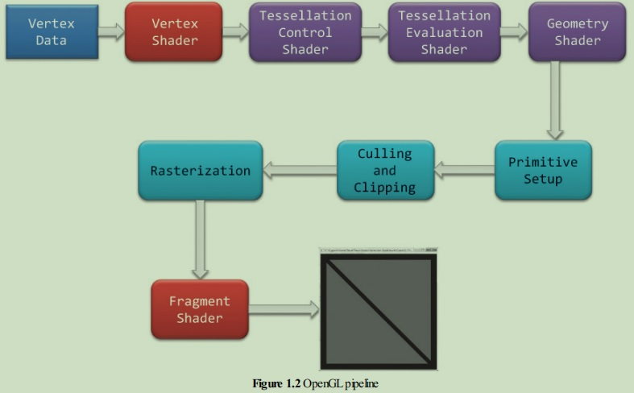

红宝书第九版，OpenGL Version 4.5


顶点数据->顶点着色器（MVP 矩阵变换，NDC 标准化设备坐标）->细分控制着色器->细分计算着色器->几何着色器->图元装配->裁剪和剔除->光栅化->片元着色器
-
顶点着色器： 将传入的顶点坐标进行
MVP矩阵变换，经过顶点着色器，它们就该是标准化设备坐标。 -
细分着色： 细分着色包括细分控制着色器和细分计算着色器，细分控制着色器和细分计算着色器是相互依存的，要么都不要，要么都要。细分着色的作用就是通过面片（patch）来描述一个物体的形状。顶点着色器只能处理每个顶点关联的数据，而细分着色能通过面片的形式分割更多的数据点（比如曲面细分）

- 细分控制着色器：细分控制着色器的一个常见应用就是将输入面片顶点（控制点）传递给细分计算着色器和通过设置细分层次因素，告诉
OpenGL怎么生成顶点，每个顶点的标注化二维坐标（细分坐标）以二维向量（也就是说只有其x和y分量是有效的）的方式保存在变量gl_TessCorrd内，该变量会被传递到细分计算着色器中（注：gl_TessCorrd保存的是一个线段的因子，如一个线段的 0.5 横坐标处，那么gl_TessCorrd.x=0.5）； - 细分计算着色器：细分控制着色器完成后，细分计算着色器就通过控制点和细分坐标生成一系列顶点坐标，输出跟顶点着色器是一样的。
- 更多细节：可以看文章OpenGL 图元处理
- 细分控制着色器：细分控制着色器的一个常见应用就是将输入面片顶点（控制点）传递给细分计算着色器和通过设置细分层次因素，告诉
-
几何着色器： 几何着色器提供了一种更加灵活的图元生成方法，它能够将（这一组）顶点变换为完全不同的图元，并且还能生成比原来更多的顶点。原理上来说，几何着色器通过一些手段也可以完成细分着色器的任务，但是为什么需要细分着色器呢？这是因为在某些图元生成上，细分着色器可以更加精确或者方便，比如生成三角形网格顶点，更多介绍参见几何着色器。可以看到，顶点着色器，细分着色器和几何着色器本质上都是对顶点进行处理。
-
图元装配： 前面的着色阶段都对顶点进行操作，关于这些顶点如何被组织成几何图元的信息并传到到
OpenGL的下个阶段。图元组装阶段将顶点组织成它们相关的几何图形，为裁剪和光栅化做准备。 -
裁剪和剔除： 偶尔，顶点会在视口之外（窗口的区域），并对与顶点相关的图元进行修改，使其像素都不在视口之外。这个操作被称为裁剪，并由 OpenGL 自动处理。
-
光栅化： 经过以上步骤，基本上一个图形就形成了，但是这个图形的坐标还是在自己的坐标系中，光栅化就是将图形的坐标转化为屏幕像素坐标，最终将图元的数学描述转化为用于显示在屏幕上的片段，然后通过帧缓存就可以在电脑上看到一个个美丽的图形。
-
片元着色器： 片元着色器是opengl渲染的最后一个流程，它的主要作用就是赋予我们图形最终的颜色，纹理渲染也在这个阶段


参考：